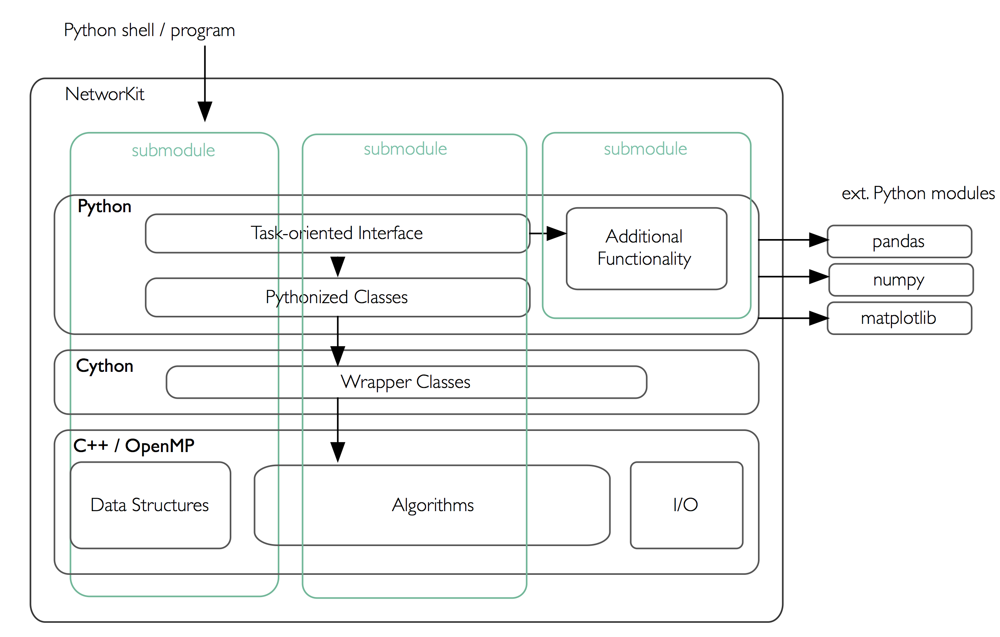

NetworKit is implemented as a hybrid of performance-aware code written in C++ (often parallelized using OpenMP) with an interface and additional functionality written in Python. More details and an illustration are provided in the Architecture Section below. NetworKit is distributed as a Python package, ready to use interactively from a Python shell, which is the main usage scenario we envision for domain experts. If you want to know more about our design goals, then take a look at our Design Goals and Principles Section below.
The best way to get an overall picture of a network is to use the Profiling module. If you are only interested in a small subset of network analysis measures, it might be more convenient to compute them separately instead of using the Profiling module. Check out the Network Analytics Section to get an overview of the most important measures NetworKit supports.
NetworKit also comes with several community detection algorithms that reveal insights into the community structure of a network. For the generation of synthetic networks with specific properties, the toolkit provides several graph generators.
A good (albeit in some parts slightly outdated) introduction to NetworKit and its features is given in the following video.
Please note that the video is more than two years old and is therefore slightly outdated in some parts.
NetworKit provides a rich set of network analysis methods. For details on the supported measures take a look at the Technical Report.
Empirically observed complex networks tend to show a heavy tailed degree distribution which follow a power-law with a characteristic exponent. NetworKit provides functions to analyze the degree distribution of a network. For details visit the Degree Distribution Section of the User Guide. The algorithm runs in \(O(n)\).
Degree assortativity measures how well nodes with similar node degrees are connected to each other which can point to important aspects such as a hierarchical network composition. In NetworKit, we implemented Newman’s formulation in linear time (\(O(m)\)) and constant memory requirements.
The diameter of a graph is the maximum length of a shortest path between any two nodes. Many real-world complex networks have a very small and often constant diameter. NetworKit provides a function to calculate the exact diameter as well as several approximation algorithms for large networks. The exact algorithm runs in \(O(n*(n+m))\) or \(O(n*(n*log(n) + m))\) if the network is weighted, where \(n\) and \(m\) are defined as number of nodes and edges respectively.
Clustering coefficients are key figures for the amount of transitivity in networks. NetworKit provides functions for both the global clustering coefficient as well as the local clustering coefficient. NetworKit implements the wedge sampling approximation algorithm. It runs in essentially linear or even constant time, depending on the respective measure. For details on the usage visit the Clustering Coefficient Section of the User Guide.
We compute connected components in linear time using a parallel label propagation scheme in which each node adopts the maximum label in its neighborhood. Take a look at the Connected Components Section in the User Guide.
The core decomposition algorithm implemented in NetworKit uses a bucket data structure for managing remaining node degrees and has a running time which is linear in the number of edges. Visit the Core Decomposition Section of the User Guide for usage details.
Centrality refers to the relative importance of a node or edge within a network. We distribute efficient implementations for betweenness, closeness, degree, Katz, eigenvector centrality and PageRank.
Betweenness:
Betweenness centrality expresses the concept that a node is important if it lies on many shortest paths between nodes in the network. A naive algorithm for calculating betweeness centrality for all nodes would require cubic time. We implement Brandes’s algorithm, by which betweenness centrality can be computed more efficiently (\(O(n*m)\) time, where \(n\) is the number of nodes and \(m\) is the number of edges of the graph). Optionally, our implementation computes the scores in parallel, at the expense of a larger memory footprint. Since this is still practically infeasible for the large data sets we target, NetworKit includes also parallelized implementations of two approximation algorithms. One of them has probabilistic guarantees such that the error is at most an additive constant, whereas the other has no theoretical guarantee but performs very well in practice.
Closeness:
Closeness centrality measures the importance of a node by the average distance to every other node in the graph. A node is therefore important when the distances to the other nodes are rather small. Computing the closeness values for all nodes requires to solve a single-source shortest path problem for all nodes (\(O(n*m)\) time, where \(n\) is the number of nodes and \(m\) is the number of edges of the graph) which makes it infeasible to compute for large networks. We therefore also provide an approximation algorithm with a probabilistic error guarantee. Notice that, since many real-world complex networks have a small diameter, the range of closeness values for the nodes of such a network is rather small.
Degree:
Degree centrality simply ranks the nodes by their degree (i.e. nodes with high degree are more important than nodes having low degrees). The degree centrality can be computed in linear time for all nodes and the algorithm can be parallelized easily.
Katz:
Katz centrality is based on the idea that a node is important when the number of its neighbors is high and the other nodes are in close distance to its neighbors. Far away nodes play a less important role which is accomodated for by the use of an attenuation factor.
Eigenvector Centrality and PageRank:
Eigenvector centrality and its variant PageRank assign relative importance to nodes according to their connections, incorporating the idea that edges to high-scoring nodes contribute more. PageRank is a version of eigenvector centrality which introduces a damping factor, modeling a random web surfer which at some point stops following links and jumps to a random page. In PageRank theory, centrality is understood as the probability of such a web surfer to arrive on a certain page. Both variants are implemented in NetworKit based on parallel power iteration.
Community detection is the task of identifying groups of nodes in the network which are significantly more densely connected among each other than to the rest of the nodes. Faced with an NP-hard optimization problem, we engineered parallel heuristics which deliver a good tradeoff between quality and running time.
PLP:
Community detection by label propagation extracts communities from a labelling of the node set. Each iteration takes linear time, and the algorithm has been
empirically shown to reach a stable solution in only a few iterations. The purely local update rule makes label propagation well suited for a parallel implementation.
PLM:
The Louvain method (PLM) for community detection can be classified as a locally greedy, bottom-up multilevel algorithm. We provide a shared-memory parallelization
of PLM in which node moves are evaluated and performed in parallel instead of sequentially. We also extend the method by an optional refinement phase, yielding the PLMR algorithm.
Generative models aim to explain how networks form and evolve specific structural features. Such models and their implementations as generators have at least two important uses: On the one hand, software engineers want generators for synthetic datasets which can be arbitrarily scaled and produce graphs which resemble the real application data. On the other hand, network scientists employ models to increase their understanding of network phenomena. So far, NetworKit provides efficient generators for the following models:
Erdös-Renyi Model:
In this simple model edges are created among the nodes with a uniform probability for all pairs of vertices. Not intended to generate realistic graphs, it was viewed as a source of mathematical examples.
Clustered Random Graphs:
A simple variation of the Erdös-Renyi model is useful for generating graphs which have distinctive dense areas with sparse connections between them (i.e. communities). Nodes are equally distributed over k subsets, while nodes from the same subset are connected with a higher probability than nodes from different subsets.
Barabasi-Albert Model:
This model implements a preferential attachment process (“rich become richer”) which results in a power-law degree distribution. The model was introduced in order to produce scale-free networks.
R-MAT Generator:
The Recursive Matrix (R-MAT) model was proposed to recreate properties including a power-law degree distribution, the small-world property and self-similarity. The R-MAT generator operates on the initially empty adjacency matrix which is recursively subdivided into four quadrants. Edges are “dropped” into the matrix and land in one of the quadrants according to given probabilities. NetworKit includes an efficient sequential implementation of R-MAT.
Chung-Lu Model:
The Chung-Lu model is a random graph model which aims to replicate a given degree distribution. The model can be conceived as a weighted version of the Erdös-Renyi model.
Havel-Hakimi Generator:
For a given realizable degree sequence, the algorithm of Havel and Hakimi generates a graph with exactly this degress sequence. While this is similar to the Chung-Lu model, the generative process promotes the formation of closed traingles, leading to a higher (and possibly more realistic) clustering coefficient.
Hyperbolic Random Graphs:
Using the exponential expansion of space in hyperbolic geometry, Hyperbolic Random Graphs exhibit high clustering, a power-law degree distribution with adjustable exponentn and natural hierarchy. Points are distributed within a disk in the hyperbolic plane, a pair of points is connected if their hyperbolic distance is below a threshold.
PubWeb Generator:
This network model is motivated by the P2P computing library PubWeb. Fot the generative process nodes are embedded into the 2D Euclidean unit torus (square with wrap-around boundaries). To create edges, a variation of the disc graph model is employed with a uniform communication radius r for all nodes. A node is connected to up to k nearest neighbors within its communication radius.
As a Python module, NetworKit enables seamless integration with Python libraries for scientific computing and data analysis, e.g. pandas for dataframe processing and analytics,
matplotlib for plotting, numpy and scipy for numerical and scientific computing and networkx for additional network analysis tasks.
Furthermore, NetworKit provides functions to convert graph objects to NetworkX and thereby connects the two modules. One can also use some of the numerous NetworkX functions by importing NetworkX. This opens up a wide range of possibilities which are not yet or will never be implemented within NetworKit. Note however that NetworkX is written mostly in pure Python, its data structures are more memory-intensive and its algorithms do not target very large graphs. You are likely to reach limits of your machine for graphs with millions of edges, while NetworKit aims for good performance for three more orders of magnitude.
With the hybrid approach, we are able to combine the performance of C++ with the easy and interactive environment of Python and Jupyter Notebook. We provide a Python package that can be installed easily via pip. This makes it very easy to start working with NetworKit interactively. However, the code can also be used as a library for application programming, either at the Python or the C++ level. Throughout the project we use object-oriented and functional concepts. On the C++ level, we make extensive use of closures, using the lambda syntax introduced with C++11. Shared-memory parallelism is realized with OpenMP, providing loop parallelization and synchronization constructs while abstracting away the details of thread creation and handling.
Connecting these native implementations to the Python world is enabled by the Cython toolchain. Among other things, Cython can compile pure Python code to C or C++, circumventing the Python interpreter, and also allows for static type annotations – yielding considerable speedup in combination. Currently we use Cython merely to integrate native code by compiling it into a native Python extension module. As a benefit of Python integration, NetworKit’s functionality can be accessed interactively. Thus, analysis kernels can be freely combined. Furthermore, NetworKit can be seamlessly integrated into the rich Python ecosystem for data analysis. We consider this kind of integration crucial for real-world data analysis workflows.
There is a variety of software packages which provide graph algorithms in general and network analysis capabilities in particular. However, NetworKit aims to balance a specific combination of strengths:
Performance: Algorithms and data structures are selected and implemented with high performance and parallelism in mind. Some implementations are among the fastest in published research. For example, community detection in a 3.3 billion edge web graph can be performed on a 16-core server in less than three minutes.
Usability: Networks are as diverse as the series of questions we might ask of them – e.g. what is the largest connected component, what are the most central nodes in it and how do they connect to each other? A practical tool for network analysis should therefore provide modular functions which do not restrict the user to predefined workflows. An interactive shell, which the Python language provides, is one prerequisite for that. While NetworKit works with the standard Python 3 interpreter, calling the module from the IPython shell and Jupyter Notebook HTML interface allows us to integrate it into a fully fledged computing environment for scientific workflows, from data preparation to creating figures. It is also easy to set up and control a remote compute server.
Integration: As a Python module, NetworKit can be seamlessly integrated with Python libraries for scientific computing and data analysis, e.g. pandas for data frame processing and analytics, matplotlib for plotting or numpy and scipy for numerical and scientific computing. For certain tasks, we provide interfaces to external tools, e.g. Gephi for graph visualization.
Design Principles: Our main focus is on scalable algorithms to support network analysis on massive networks. Several algorithm and implementation patterns are used to achieve this goal: parallelism, fast heuristics and approximation algorithms for problems that are otherwise not solvable in nearly-linear time, efficient data structures, and modular software design.
{kind=link}